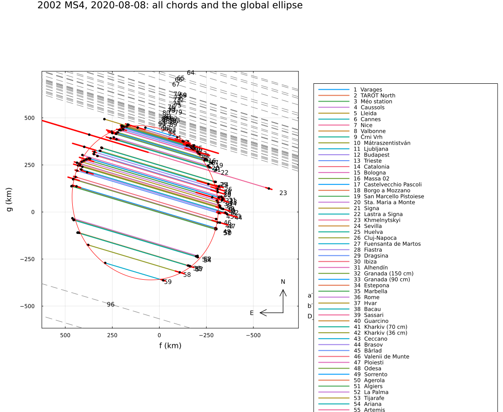
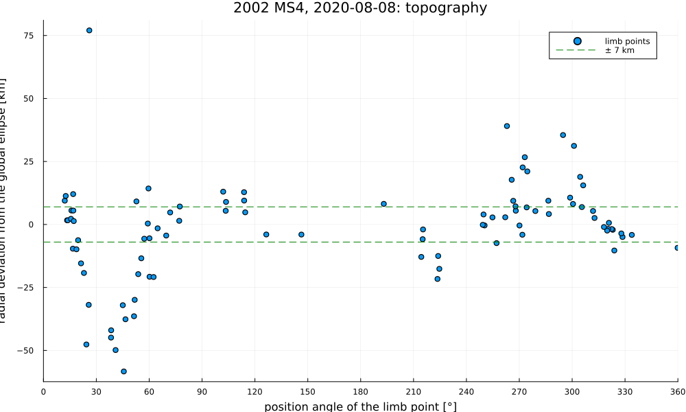

2002 MS4, 2020 August 8
The stellar occultation by the trans-Neptunian object (307261) 2002 MS4 on 2020 August 8, reduced from the published timings of Rommel et al. (2023), A&A 678, A167: 59 positive and 40 negative chords from Europe, North Africa and western Asia (stations at the CDS) – one of the best-observed occultations by a trans-Neptunian object.
The example covers:
- the global ellipse from the paper's 13 selected chords, with a tolerance for topography;
- all 59 chords: the radial deviations of the limb points from the global ellipse, which show the large depression found by the paper (≈ 45 km deep, ≈ 320 km wide);
- the grazing negative chord at Montsec, and the astrometry.
The data are transcribed in examples/data/2002ms4_20200808.jl (timings) and read from the CDS tables in examples/data/2002ms4_cds/ (stations), with the stored JPL Horizons ephemeris, so the script runs offline:
julia --project=. examples/2002ms4_2020.jl [output_dir] (default: examples/output/2002ms4_2020)The code is not run when the manual is built. The output after each section is that of the last run of examples/2002ms4_2020.jl, stored in examples/output/2002ms4_2020/output.txt.
using Occultations, Random, Printf, Statistics
using Plots
import CairoMakie # saves the GeoMakie maps (Makie figures)
include(joinpath(@__DIR__, "standard_figures.jl"))
include(joinpath(@__DIR__, "data", "2002ms4_20200808.jl"))
out = length(ARGS) >= 1 ? ARGS[1] : mkpath(joinpath(@__DIR__, "output", "2002ms4_2020"))
rng = MersenneTwister(2020)
P = MS4_PAPER
row(label, r) = @printf("%-44s a′ = %5.1f ± %4.1f ε′ = %.3f ± %.3f PA = %5.1f ± %4.1f R_eq = %5.1f ± %4.1f χ²/dof = %6.2f\n",
label, r[:equatorial_radius]..., r[:oblateness]..., mod(r[:position_angle][1], 180),
r[:position_angle][2], r[:equivalent_radius]..., r.chi2 / r.dof)Event and geometry (paper values in parentheses)
ev = ms4_event()
D = ev.ca.dist_km
@printf("%d positive and %d negative chords; distance %.2f au (%.2f), shadow velocity %.2f km/s\n", count(ispositive, ev.chords),
count(isnegative, ev.chords), D / 1.495978707e8, P.distance_au, ev.ca.vel)
@printf("stellar diameter %.2f km (%.2f), Fresnel scale %.2f km at 0.6 µm (%.2f)\n", apparent_diameter(ev.star, D),
P.star_diameter_km, fresnel_scale(0.6, D), P.fresnel_km)59 positive and 40 negative chords; distance 45.70 au (45.70), shadow velocity 20.53 km/s
stellar diameter 1.19 km (1.19), Fresnel scale 1.43 km at 0.6 µm (1.54)The global ellipse from the 13 selected chords
The paper selects 13 chords (GPS timing where possible, professional telescopes for the NTP ones) and allows for topography of 7 km; its Table 4 gives 3σ errors. Here: σlimb = 7 km with the negative chords as hard limits, then with σlimb fitted and the negative chords as soft constraints (the paper's solutions may cross the Montsec chord within the tolerance).
es = ms4_event(selected=true)
@printf("%-44s a′ = %5.1f ± %4.1f ε′ = %.3f ± %.3f PA = %5.1f ± %4.1f R_eq = %5.1f ± %4.1f (3σ)\n", "published (Table 4)",
P.ellipse.a..., P.ellipse.oblateness..., P.ellipse.position_angle..., P.ellipse.R_equiv...)
r7 = fit_limb(es; σ_limb=P.tolerance, rng=rng)
row("σ_limb = 7 km, negative chords hard", r7)
rs = fit_limb(es; σ_limb=:auto, negative=:soft, rng=rng)
row(@sprintf("σ_limb = %.1f km, negative chords soft", rs.problem.σ_limb), rs)
for x in first(sort(check_negative_chords(rs); by=x -> x.distance), 3)
@printf(" negative chord %-38s %s, %5.1f km from the limb\n", x.chord, x.conflict ? "crosses the limb" : "outside",
x.distance)
endThe paper's Sect. 3.4 quotes ε′ = 0.034 for the same ellipse, against 0.066 in Table 4; the fits here give 0.03–0.04.
published (Table 4) a′ = 412.0 ± 10.0 ε′ = 0.066 ± 0.034 PA = 121.0 ± 16.0 R_eq = 398.0 ± 12.0 (3σ)
σ_limb = 7 km, negative chords hard a′ = 415.5 ± 2.1 ε′ = 0.080 ± 0.006 PA = 126.4 ± 2.7 R_eq = 398.5 ± 1.1 χ²/dof = 3.40
σ_limb = 12.5 km, negative chords soft a′ = 417.4 ± 3.3 ε′ = 0.089 ± 0.011 PA = 117.7 ± 4.1 R_eq = 398.4 ± 1.9 χ²/dof = 1.00
negative chord Montsec (Catalonia) crosses the limb, -5.2 km from the limb
negative chord Cima Ekar (Asiago) outside, 5.5 km from the limb
negative chord Centro de Ciencia Viva (Constancia) outside, 11.0 km from the limbTopography: all 59 chords against the global ellipse
The radial deviation of each limb point (ingress and egress of every chord) from the global ellipse, as a function of its position angle (from north through east, from the centre); negative: inside the ellipse. The chords with large timing errors (> 1 s) are left out.
cf, cg = rs[:center_f][1], rs[:center_g][1]
a′, ε, φ = rs[:equatorial_radius][1], rs[:oblateness][1], rs[:position_angle][1]
b′ = a′ * (1 - ε)
ellr(θ) = (Δ = θ - φ; a′ * b′ / sqrt(a′^2 * cosd(Δ)^2 + b′^2 * sind(Δ)^2)) # φ: minor axis
pts = [p for p in contact_points(ev) if p.σ_t <= 1.0]
θs = [mod(atand(p.f - cf, p.g - cg), 360) for p in pts]
rd = [hypot(p.f - cf, p.g - cg) - ellr(θ) for (p, θ) in zip(pts, θs)]
# points more than 100 km off the ellipse are outliers (timing problems), listed and left out
out_ = findall(x -> abs(x) > 100, rd)
for i in out_
@printf("outlier: %s %s, %+.0f km (PA %.0f°)\n", pts[i].chord, pts[i].kind, rd[i], θs[i])
end
keep = setdiff(eachindex(rd), out_)
pts, θs, rd = pts[keep], θs[keep], rd[keep]
@printf("%d limb points; deviation from the global ellipse: median %+.1f km, scatter (MAD) %.1f km\n", length(rd),
median(rd), 1.4826 * median(abs.(rd .- median(rd))))
println("PA bin n median min [km] chords more than 15 km inside")
for lo in 0:30:330
k = findall(θ -> lo <= θ < lo + 30, θs)
isempty(k) && continue
@printf("%3d–%3d° %3d %6.1f %6.1f %s\n", lo, lo + 30, length(k), median(rd[k]), minimum(rd[k]),
join(unique(pts[i].chord for i in k if rd[i] < -15), ", "))
end
kdep = findall(θ -> 0 <= θ < 120, θs)
@printf("deepest point: %.1f km at PA %.0f° (%s); paper: depression of %.1f ± %.1f km depth over %.0f ± %.0f km\n",
minimum(rd[kdep]), θs[kdep[argmin(rd[kdep])]], pts[kdep[argmin(rd[kdep])]].chord, P.depression.depth...,
P.depression.extent...)The limb points between position angles of about 30° and 60° lie well inside the global ellipse – the paper's large depression (centred at 40 ± 20°). Elsewhere the median deviation stays within about 10 km; single points outside the ellipse by 20–40 km come from chords with NTP timing, where a clock error moves one contact outwards and the other inwards. (The paper fits a model of parabolic features to the deviations of its selected points.)
outlier: Khmelnytskyi immersion, +277 km (PA 277°)
94 limb points; deviation from the global ellipse: median +0.5 km, scatter (MAD) 11.5 km
PA bin n median min [km] chords more than 15 km inside
0– 30° 17 1.7 -47.6 Massa 02, Borgo a Mozzano, Sta. Maria a Monte, Signa
30– 60° 14 -31.0 -58.3 Sevilla, Huelva, Cluj-Napoca, Fiastra, Dragsina, Ibiza, Granada (150 cm), Granada (90 cm), Marbella
60– 90° 8 -3.0 -20.9 Kharkiv (70 cm), Ceccano
90–120° 6 9.2 4.8
120–150° 2 -4.0 -4.0
180–210° 1 8.2 8.2
210–240° 6 -12.7 -21.6 La Palma, Tijarafe
240–270° 11 4.0 -7.4
270–300° 11 9.4 -4.1
300–330° 16 -0.2 -10.3
330–360° 2 -6.7 -9.3
deepest point: -58.3 km at PA 46° (Ibiza); paper: depression of 45.1 ± 1.5 km depth over 322 ± 39 kmAstrometry
a = astrometry(rs)
t = Epoch(P.position.epoch)
ra_, dec_, _ = ephem_radec(ev.body, t)
r_, d_ = Occultations.offset_radec(ra_, dec_, a.offset_ra, a.offset_dec)
@printf("%s UTC: RA %s Dec %s (σ %.1f, %.1f mas); minus Table 5: Δα cos δ = %+.1f mas, Δδ = %+.1f mas\n",
P.position.epoch, format_ra(r_; digits=5), format_dec(d_; digits=4), a.ra_err, a.dec_err,
(r_ - parse_ra(P.position.ra)) * cosd(d_) * 3.6e6, (d_ - parse_dec(P.position.dec)) * 3.6e6)2020-08-08T20:44:27.26 UTC: RA 18 47 29.96131 Dec -06 16 31.3445 (σ 0.1, 0.1 mas); minus Table 5: Δα cos δ = +0.0 mas, Δδ = -0.0 masFigures
lim = ellipse_outline(; equatorial_radius=a′, oblateness=ε, position_angle=φ)
savefig(plot(ev; limb=lim, center=(cf, cg), title="2002 MS4, 2020-08-08: all chords and the global ellipse", size=(1100, 900)),
joinpath(out, "2002ms4_all_chords.png"))
p = scatter(θs, rd; xlabel="position angle of the limb point [°]", ylabel="radial deviation from the global ellipse [km]",
label="limb points", markersize=4, xlims=(0, 360), xticks=0:30:360,
title="2002 MS4, 2020-08-08: topography", size=(1000, 600))
hline!(p, [-P.tolerance, P.tolerance]; color=:green, linestyle=:dash, label="± 7 km")
savefig(p, joinpath(out, "2002ms4_topography.png"))
# the standard figures: limb fits, maps (prediction, post-fit, comparison) and the globe
standard_figures("2002ms4", rs; out=out, projection="+proj=laea +lon_0=10 +lat_0=40", limits=(-25, 45, 25, 58),
window=600, marks=60)
println("figures written to ", out)All chords with the global ellipse from the 13 selected chords, and the radial deviations of the limb points:

